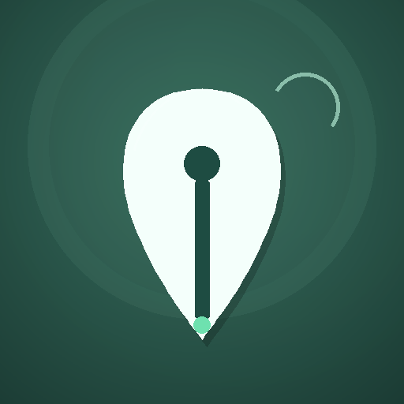

Your ink, ready

루미잉크를 포레스트로
적어내려갑니다
짙은 숲빛 펜촉. 이 색으로 홈 화면 아이콘과 앱의 첫 인상이 정해져요.
설치 후 아이콘을 바꾸려면 기존 앱을 제거한 뒤 다른 아이콘으로 다시 설치해 주세요.LUMI INK
Your ink, ready

짙은 숲빛 펜촉. 이 색으로 홈 화면 아이콘과 앱의 첫 인상이 정해져요.
설치 후 아이콘을 바꾸려면 기존 앱을 제거한 뒤 다른 아이콘으로 다시 설치해 주세요.